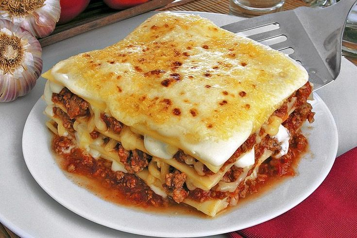

Lasagna
Lasagna is a classic Italian dish made by layering wide, flat sheets of pasta with a variety of fillings. Typically, it consists of alternating layers of pasta, a rich meat sauce (often made from ground beef or sausage cooked in tomato sauce), and creamy ricotta or béchamel sauce. The dish is topped with mozzarella and Parmesan cheese, then baked until golden and bubbly. With its hearty layers and blend of savory flavors, lasagna is a comforting, satisfying meal perfect for gatherings and family dinners.